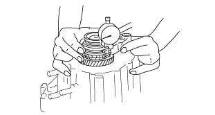

B3E051501029102
1. Remove the rear cover.
2. Measure the 5th gear thrust clearance using a dial indicator.

-
• If it exceeds the maximum specification, inspect the contact surfaces of 5th gear and the clutch hub. Replace worn or damaged parts.
-
Standard clearance
-
0.06-0.26 mm {0.0024-0.0102 in}
-
Maximum clearance
-
0.31 mm {0.0122 in}